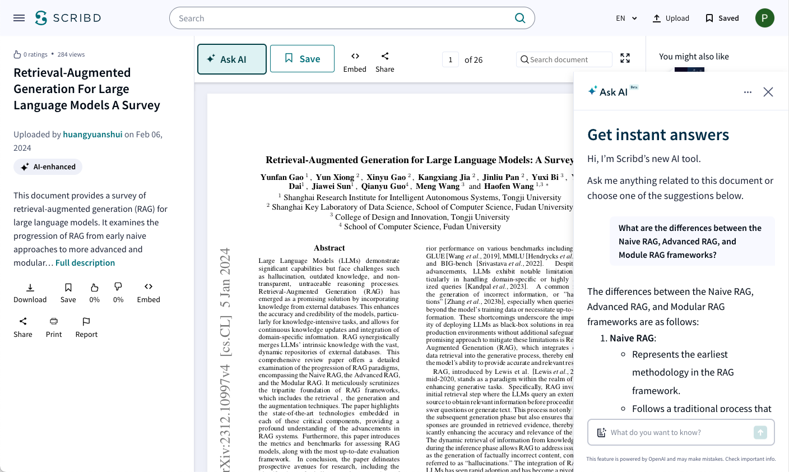
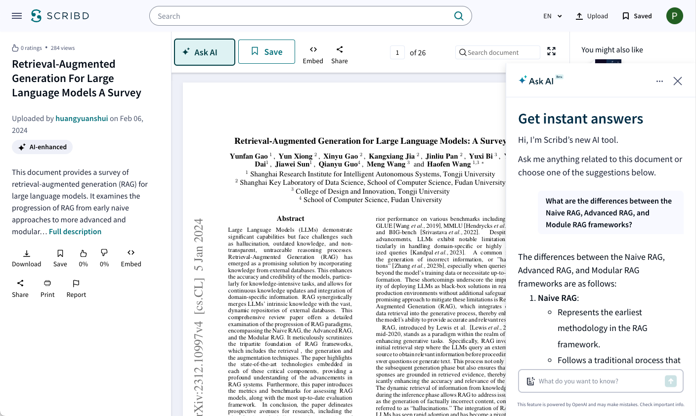
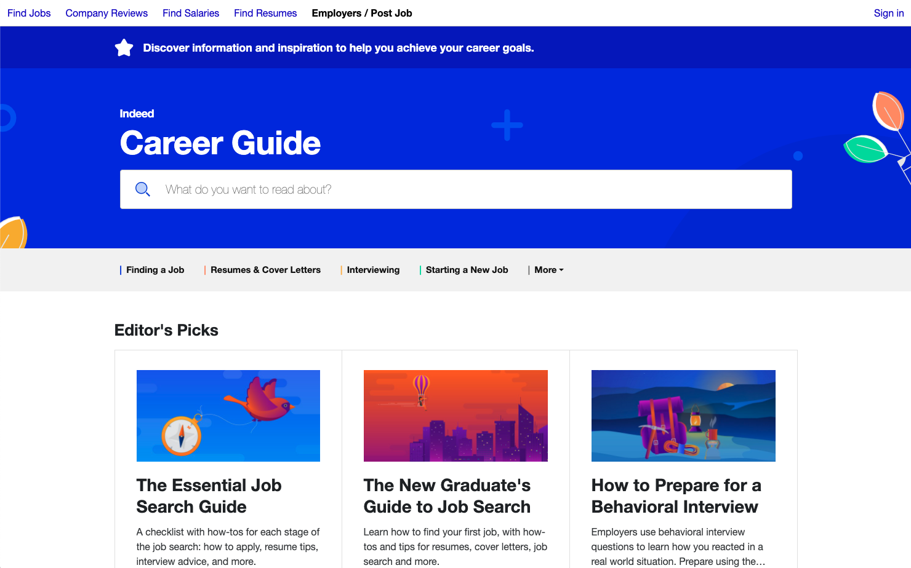
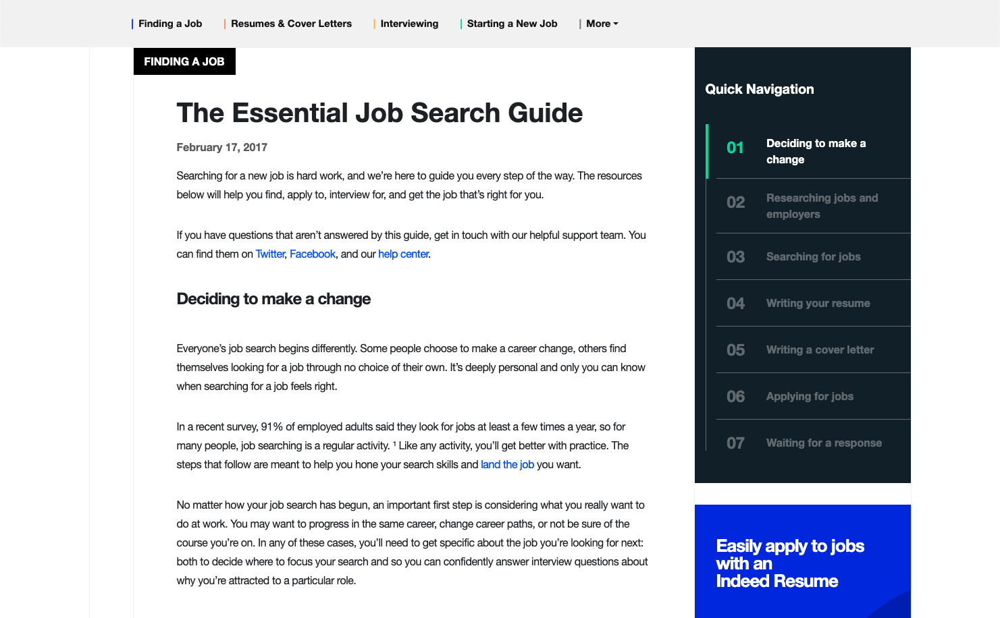

Hi, I'm Patrick Stephens
I'm a Senior Product Manager with years experience building products with great teams. My product career started by solving problems that would increase SEO traffic. This gave me an interest in search engines so lately I've been solving discovery problems. I have interest in building new products and optimizing existing ones. I'm inspired by solving the world's most challenging problems.
These missions have driven me to help companies achieve their vision:
What vision are you trying to achieve?
Let's build valuable products together
Ask AI @ Scribd
Ask AI is an AI Assistant that can answer questions about the document you're viewing.
 

Ask AI was a 0-to-1 product launch. Our target users struggled to quickly and easily access information from our documents. Some documents contain hundreds of pages and require a significant time investment to read and find specific information. This led us to ask: "What if you didn't have to read the document to get the information you need?"
With the rise in generative AI technology our team put forward this hypothesis: If we add an AI assistant to our document page then we can reduce the time it takes to find information on our documents.
We began by validating our users' needs through product surveys. Then we put together a lo-fi design prototype for concept testing and value validation. As our confidence increased in the user value we did usability testing and iterated on our designs. Meanwhile, our team of engineers built a feasibility prototype that we used for employee dogfooding. This dogfooding exercise led us to iterate on the quality of responses before launch.
Ask AI is currently in Beta launched to a limited set of users.
Press
- Scribd Introduces Ask AI to World Subscribers in a Beta Release
- Scribd and Everand Introduce AI-Powered Discovery
Career Guide @ Indeed
Career Guide is a career content hub that provides jobseekers with advice on how to get hired.
 At the time I started working on Career Guide our content team was using WordPress as their CMS. Uploading articles was a time consuming process and each article had to be uploaded one at a time. This limited the amount of content the team could get live on the site and resulted in a backlog of articles waiting to be published. This led us to ask: "What if we didn't have to upload content manually?"
Our team got together and through brainstorming we put forward this hypothesis: If we migrate from WordPress to a new CMS then we can increase the amount of content we upload to the site which will increase our SEO traffic.
We migrated from WordPress to a Gatsby framework using Strapi as a headless CMS. We also took this an opportunity to relaunch the site. In a redesign we made it easier to navigate the site so that the newly published content was accessible. The relaunch of Career Guide resulted in 100s of articles uploaded each day, increased SEO visits, and gave back time to our content team to focus on editing.